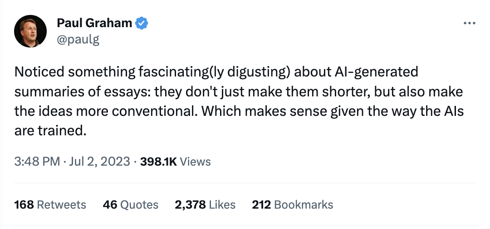
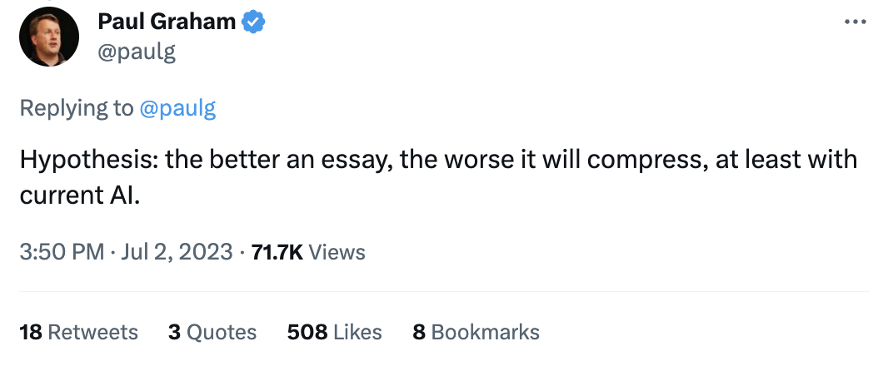

32. Some thoughts on thought
2023-07-03
I’ve been reading Thinking, Fast and Slow by Daniel Kahneman. It is great book and filled with many ideas that have interested me for a long time. I still remember reading some Kahneman papers as an undergraduate and being very entranced. [0]
My last few posts have considered how large language models (LLMs) fit into our world. One mental model I have for LLMs is an on-demand, simplified brain exceptional at pattern recognition and repetition, prone to serious cognitive biases, and lacking, but quickly gaining, certain basic functions.
Reading Kahneman and some other works recently sparked a handful of thoughts on thinking more broadly, and especially the human (and AI) predilection for seeking, understanding, and extrapolating patterns. [1] Here are a few.
Our pattern-seeking brain
A few years ago my wife shared a really insightful point that stuck with me ever since. We were sitting by and watching a fire.
“Do you know why humans love staring at fire? Our brain is always looking for patterns. Fire seems to have them, but they don’t, so we keep watching.”
This idea of humans seeking and expecting patterns in everything seems such a fundamental tenet of our brains that we not only take it for granted, it creates a huge cognitive blind spot. Patterns pack an impressive amount of information into a single concept, and can help lend predictability to an otherwise random and noisy world. It is deeply useful to know when it is light out, and there is comfort in knowing the sun always rises in the morning and sets in the evening.
Sometimes we over-rely on patterns. Cognitive biases are handy mental shortcuts extrapolating a pattern but that can lead to incorrect decisions and judgments. [2]
Other times subverting pattern expectations tickles the brain. Playing with expectations can yield humor (e.g., jokes are stories with a surprise at the end). Humans have been proven to love both familiarity and novelty and the interaction between the two. [3]
Anomalies
I recently read a 2007 paper from Jürgen Schmidhuber, a German computer scientist that’s done a lot of work in artificial neural networks. It sounds silly, but the paper discusses how a mathematical algorithm might interpret beauty, make discoveries, and be curious and creative.
It’s a dense but fun read, and really centers on this idea that learning “is about finding regularities, by clustering the data … or predicting parts of it from other parts.” Algorithmic learning aims to “improve the compression of the observed data, by discovering a program that computes and thus explains the history (and hopefully does so quickly) but is clearly shorter than the shortest previously known program of this kind.”
Learning then might be thought of as the ability to compress information into more-easily-stored concepts for later retrieval. If that concept is “simple” and “short”, Schmidhuber says, then we might call it “beautiful”, like an elegant mathematical proof. “A good learner … will improveits compression algorithm over time … making parts of the data history subjectively more compressible, more explainable, more regular and more ‘beautiful.’”
And yet there is a limit to the regularity and amount of compression that is optimal or even possible. The world is not completely regular or compressible to a handful of beautiful proofs. This is to a learner’s benefit, as irregularities and novelty makes things interesting. These concepts are too dense and interesting for me to easily summarize, so I’ll just pull two quotes here instead.
Good observer-dependent art deepens the observer’s insights about this world or possible worlds, unveiling previously unknown regularities in compressible data, connecting previously disconnected patterns in an initially surprising way that makes the combination of these patterns subjectively more compressible, and eventually becomes known and less interesting. I postulate that the active creation and attentive perception of all kinds of artwork are just by-products of my curiosity principle yielding reward for compressor improvements.
…
For example, which song should some human observer select next? Not the one he just heard ten times in a row. It became too predictable in the process. But also not the new weird one with the completely unfamiliar rhythm and tonality. It seems too irregular and contains too much arbitrariness and subjective noise. He should try a song that is unfamiliar enough to contain somewhat unexpected harmonies or melodies or beats etc., but familiar enough to allow for quickly recognizing the presence of a new learnable regularity or compressibility in the sound stream. Sure, this song will get boring over time, but not yet.
Abstraction and understanding
Abstraction is, again, a critical tool for our brain (and artificial brains) to form knowledge and a world model. [5] There is a relationship between observation and understanding and the compression between the two.
This became clearer to me when reading a Borges short story called Funes the Memorious. [6] The story is about a man who, after falling off a horse and losing the ability to walk, gains the ability to remember everything in his life, down to the most minute detail. He is not able to abstract concepts, and cannot forget things:
He was, let us not forget, almost incapable of ideas of a general, Platonic sort. Not only was it difficult for him to comprehend that the generic symbol dog embraces so many unlike individuals of diverse size and form; it bothered him that the dog at three fourteen (seen from the side) should have the same name as the dog at three fifteen (seen from the front). His own face in the mirror, his own hands, surprised him every time he saw them.
Borges illustrates a brain unable to abstract concepts, compress ideas, or identify patterns. Even physical objects lose their contiguity.
Building a better brain
At the present moment there are a handful of people around the world building an intelligence modeled after, and capable of interacting with, our own. One of the fundamental questions in that project seems to be the extent to which that intelligence discovers and understands patterns and extrapolates from them.
On one end we have Kahneman’s System 1 that over-extrapolates and over-compresses information to the point of faulty judgment. On the other end we have Funes whose complete lack of abstraction bogs him down with cognitive overexertion. There is a constant tension between the beauty and elegance of simple explanations and the details and irregularities that keeps things novel and interesting.
I was reminded of this thought by Paul Graham’s reactions to an AI summary of one of his (very terrific) essays:


As in most things, different cases will likely require different approaches. Time will tell how things land.
[0] In fact, I remember being a willing participant in a handful of psychology studies as an undergraduate. A few were class requirements, and a few paid some beer money.
[1] The parallels between pattern-matching and the statistical bases of large language models are very interesting but I’m not sure if or how those fields intersect. If you happen to know, reach out!
[2] Kahneman calls this “System 1”, or the fast and intuitive part of the brain.
[3] Derek Thompson’s profile of French-American industrial designer Raymond Loewy in the Atlantic is a must-read . Here’s a snippet:
“Loewy had an uncanny sense of how to make things fashionable. He believed that consumers are torn between two opposing forces: neophilia, a curiosity about new things; and neophobia, a fear of anything too new. As a result, they gravitate to products that are bold, but instantly comprehensible. Loewy called his grand theory “Most Advanced Yet Acceptable”—Maya. He said to sell something surprising, make it familiar; and to sell something familiar, make it surprising.”
[4] “Simple Algorithmic Principles of Discovery, Subjective Beauty, Selective Attention, Curiosity & Creativity.” https://arxiv.org/pdf/0709.0674.pdf
[5] I’m not sure the exact relationship between patterns and abstraction, but there is something here.
[6] Highly recommend if you have a spare half hour: https://vigeland.caltech.edu/ist4/lectures/funes%20borges.pdf .